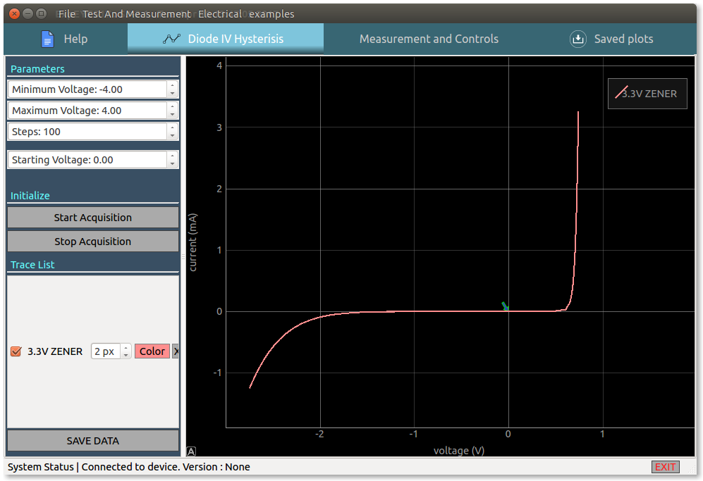
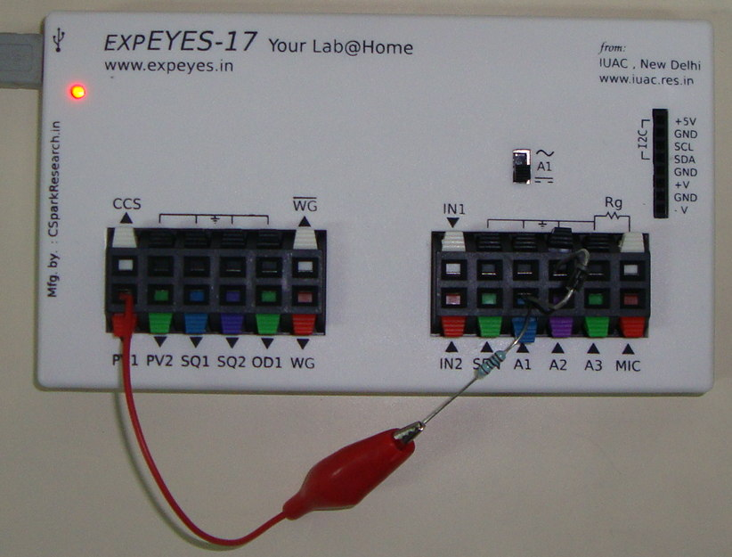

Schematic

Screenshot

Photograph
Screen recording of a 3.3V zener diode being used
Parameters
The voltage on PV1 is swept in equal step sizes along the following path, startVoltage -> Maximum Voltage -> Minimum Voltage -> startVoltage, in order to generate the hysterisis curve.
- Minimum Voltage : minimum voltage to be set on PV1
- Maximum Voltage : Maximum voltage to be set on PV1
- Steps : Total number of datapoints to acquire.
- StartVoltage : Starting voltage value for the hysteresis